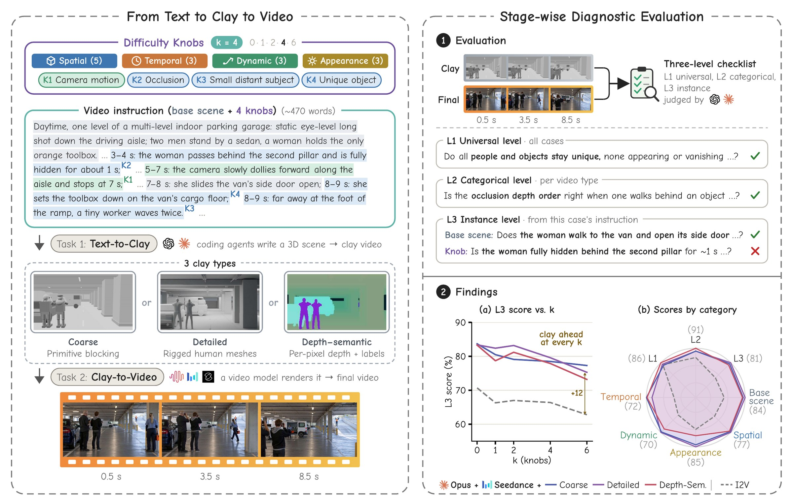
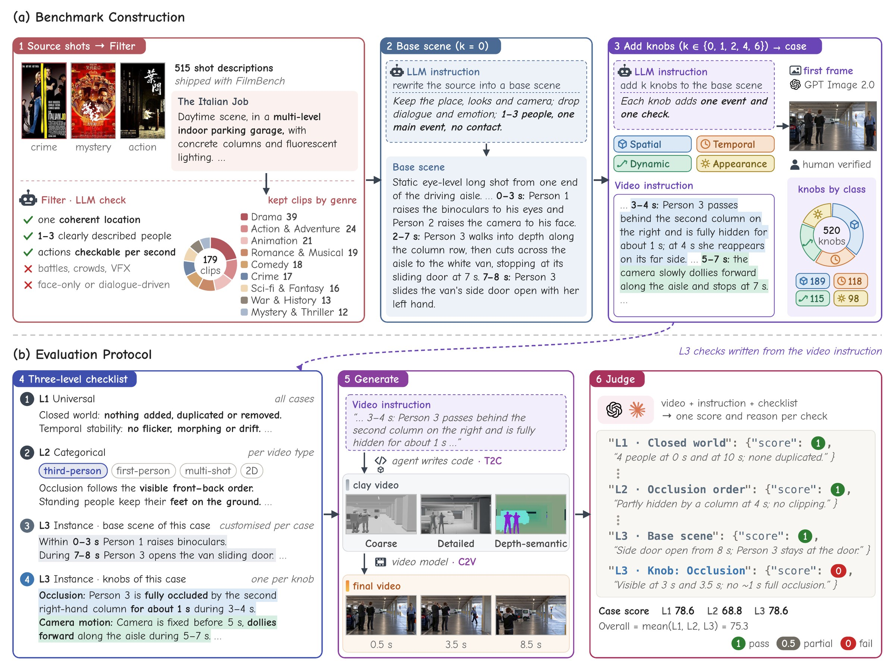
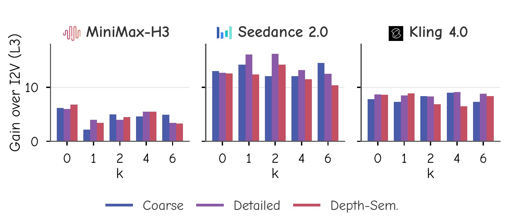
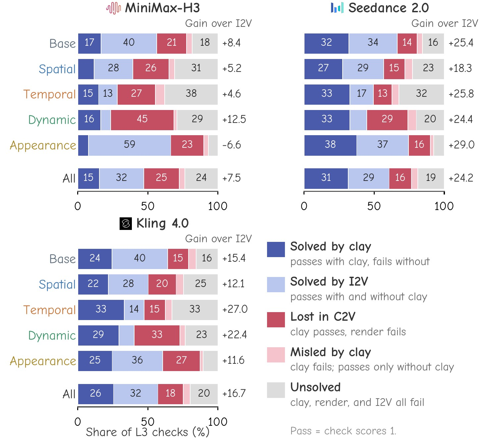
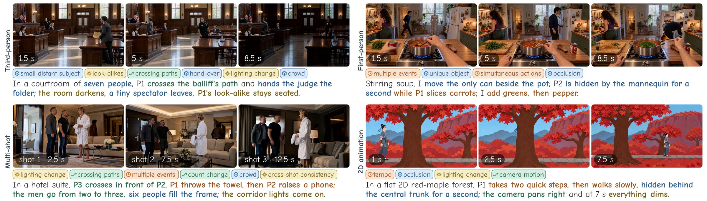
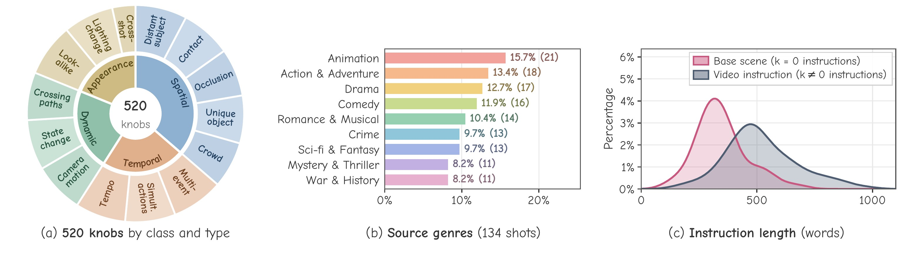

Video generation models synthesize photorealistic shots, yet their 4D geometry frequently deviates from complex instructions governing subject staging, occlusion order, camera motion, and event timing. A two-stage code-then-paint pipeline addresses this gap: a coding agent first constructs an untextured 3D layout (Text-to-Clay, T2C), which a video generation model then renders into pixels (Clay-to-Video, C2V). When this pipeline fails, however, existing benchmarks cannot trace whether the error arises in T2C or C2V.
We introduce ClayBench, an end-to-end diagnostic benchmark that disentangles both stages by scoring the clay videos and the final videos against a unified three-level checklist (Universal, Categorical, and Instance). Derived from real shots across four video types, ClayBench controls complexity via k difficulty knobs and compares Coarse, Detailed, and Depth-Semantic clay representations. Benchmarking three coding agents and three video generation models yields three key insights. First, generative rendering is a major bottleneck: video generation models lose 29 to 45% of the checks satisfied in the clay, shrinking the T2C quality gaps across coding agents after rendering, with Dynamic checks lost mainly in C2V and Temporal checks failing mainly in T2C. Second, clay conditioning outperforms Image-to-Video (I2V) at every difficulty level k. Third, higher clay scores do not guarantee better final videos: video generation models repair many clay errors, Depth-Semantic clay reaches the highest Overall despite the lowest T2C score, and the best representation depends on the video generation model and video type.

ClayBench evaluates both stages of the pipeline with the same checklist. The clay video and the final video are judged on identical checks, so a failure can be attributed to the stage that caused it.

From the video instruction, the agent writes code that builds an untextured 3D scene: people, props, camera, and timing. Rendering it gives the clay video.
The video generation model receives the clay video, the first frame, and the same instruction, and renders the final video. The I2V baseline receives everything except the clay.
Universal, Categorical, and Instance checks score the clay and the final video. Every Instance check names the people, a time window, and the expected state.
Each case highlights one Instance check. Pick a video generation model to compare its render from the clay with its I2V render, which uses the same first frame and instruction but no clay.
Final-video scores (%) on all 200 cases with Claude Opus 5.5 clays. L3 is the Instance-level score and Overall is the mean of L1 to L3. Green: gain over I2V. Shaded: best Overall per video generation model.
Clay (T2C) columns score the clay video itself and are shared across video generation models. Base and the four knob categories split the L3 score. Bold: best per video generation model.
Two VLM judges from different model families score every check as 1, 0.5, or 0 without knowing the coding agent or clay type, and we report their mean. The two-judge mean correlates with blind human ratings at both stages.
Three coding agents (Claude Opus 5.5, Claude Sonnet 5.5, GPT-6.1 Sol), three clay representations, and three video generation models (MiniMax-H3, Seedance 2.0, Kling 4.0).
Clay leads I2V in all 45 combinations of video generation model, clay representation, and k. Scores fall as instructions get harder, and the gap stays roughly constant: 2 to 7 L3 points on MiniMax-H3, 7 to 9 on Kling 4.0, and 10 to 16 on Seedance 2.0. Under I2V the three models score within 3 L3 points of one another. With clay they separate clearly, so following a clay video is a distinct capability.


From 29% (Seedance 2.0) to 45% (MiniMax-H3) of the checks that pass in the clay fail in the final video. Dynamic checks usually pass in the clay and are lost most often in C2V. Temporal checks have the lowest clay pass rate, so their headroom lies in T2C. Coding agents differ clearly in clay quality, yet after rendering their best final L3 scores lie within 1.5 points.
Video generation models also repair 39 to 49% of the checks that fail in the clay. Depth-Semantic clay has the lowest clay score, yet its renders reach the highest Overall on all three video generation models. No single representation is best for every video type. On the closed-source models, Detailed clay is stronger for third-person, first-person, and multi-shot videos.

Cases come from text descriptions of 134 real shots across 9 genres and four video types (third-person, first-person, multi-shot, 2D animation). Each is rewritten into a single-event base scene and made harder one knob at a time.
Instruction adherence, following the clay, closed world, identity stability, physical plausibility, visual clarity, finished appearance.
Four checks per video type on its shooting conventions, such as depth ordering or cut timing.
Base-scene checks verify the main event. Each knob adds one check with its people, time window, and expected state.

@article{kwan2026claybench,
title = {ClayBench: Evaluating Text-to-Clay-to-Video Generation},
author = {Kwan, Hohin and Kong, Xianghao and Yang, Songlin and Yang, Xuyi
and Zhang, Zeyu and Zhang, Lvmin and Rao, Anyi},
journal = {arXiv preprint arXiv:XXXX.XXXXX},
year = {2026}
}